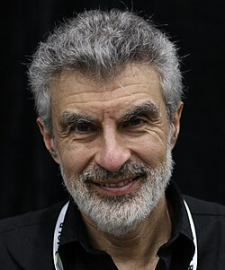
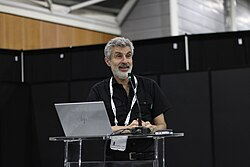
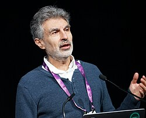

Yoshua Bengio | |
|---|---|
 Bengio at ICLR 2025 | |
| Born | March 5, 1964 Paris, France |
| Citizenship | Canada |
| Education | McGill University (BS, MS, PhD) |
| Known for | |
| Relatives | Samy Bengio (brother) |
| Awards | Marie-Victorin Prize (2017) Turing Award (2018) AAAI Fellow (2019) Legion of Honor (2022) VinFuture Prize (2024) Honorary Doctorate (2025) |
| Scientific career | |
| Fields | Machine learning Deep learning Artificial intelligence[1] |
| Institutions | Université de Montréal MILA Element AI |
| Thesis | Artificial Neural Networks and their Application to Sequence Recognition (1991) |
| Renato De Mori[2] | |
Notable students | Ian Goodfellow[2] |
| Website | yoshuabengio |
{kind=link}
Yoshua Bengio OC OQ OBE FRS FRSC (born March 5, 1964[3]) is a Canadian computer scientist, and a pioneer of artificial neural networks and deep learning.[4][5][6]
Bengio received the 2018 ACM A.M. Turing Award, often referred to as the "Nobel Prize of Computing", with Geoffrey Hinton and Yann LeCun for their foundational work on deep learning.[7] Bengio, Hinton, and LeCun are sometimes referred to as the "Godfathers of AI".[8][9][10][11][12][13]
Bengio is the most-cited computer scientist globally (by both total citations and by h-index),[14] and the most-cited living scientist across all fields (by total citations).[15] In November 2025, Bengio became the first AI researcher with more than a million Google Scholar citations. In 2024, Time magazine included Bengio in its yearly list of the world's 100 most influential people.[16]
Bengio is a professor at the Université de Montréal and co-president and scientific director of the nonprofit LawZero. He founded Mila, the Quebec Artificial Intelligence (AI) Institute, and was its scientific director until 2025.
Early life and education
Bengio was born in France to a Jewish family who had emigrated to France from Morocco. The family then relocated to Canada.[17] He received his Bachelor of Engineering degree (Computer engineering), MSc (computer science) and PhD (computer science) from McGill University.[2][18]
Bengio is the brother of Samy Bengio,[17] also an influential computer scientist working with neural networks, who is senior director of AI and ML research at Apple.[19]
The Bengio brothers lived in Morocco for a year during their father's military service there.[17] His father, Carlo Bengio was a pharmacist and a playwright; he ran a Sephardic theater company in Montreal that performed pieces in Judeo-Arabic.[20][21] His mother, Célia Moreno, was an actress in the 1970s in the Moroccan theater scene led by Tayeb Seddiki. She studied economics in Paris, and then in Montreal in 1980 she co-founded with artist Paul St-Jean l’Écran humain, a multimedia theater troupe.[22]
Career and research
After his PhD, Bengio was a postdoctoral fellow at MIT (supervised by Michael I. Jordan) and AT&T Bell Labs.[23] Bengio has been a faculty member at the Université de Montréal since 1993, heads the MILA (Montreal Institute for Learning Algorithms) and is co-director of the Learning in Machines & Brains program at the Canadian Institute for Advanced Research.[18][23]
Along with Geoffrey Hinton and Yann LeCun, Bengio is considered by journalist Cade Metz to be one of the three people most responsible for the advancement of deep learning during the 1990s and 2000s.[24] Bengio et al. introduced the neural probabilistic language model, which learned distributed representations (word embeddings) for words to overcome the "curse of dimensionality" in natural language processing.[25] Among the computer scientists with an h-index of at least 100, Bengio was as of 2018 the one with the most recent citations per day, according to MILA.[26][27] As of August 2024, he has the highest Discipline H-index (D-index, a measure of the research citations a scientist has received) of any computer scientist.[28] Thanks to a 2019 article on a novel RNN architecture, Bengio has an Erdős number of 3.[29]
In October 2016, Bengio co-founded Element AI, a Montreal-based artificial intelligence incubator that turns AI research into real-world business applications.[24] The company sold its operations to ServiceNow in November 2020,[30] with Bengio remaining at ServiceNow as an advisor.[31][32] Bengio currently serves as scientific and technical advisor for Recursion Pharmaceuticals[33] and scientific advisor for Valence Discovery.[34]
{kind=link}

At the first AI Safety Summit in November 2023, British Prime Minister Rishi Sunak announced that Bengio would lead an international scientific report on the safety of advanced AI. An interim version of the report was delivered at the AI Seoul Summit in May 2024, and covered issues such as the potential for cyber attacks and 'loss of control' scenarios.[35][36][37] The full report was published in January 2025 as the International AI Safety Report,[38][39] for which Bengio continues to serve as Chair[40].
In June 2025, Bengio launched a nonprofit organization, LawZero[41], aimed at building "honest" AI systems that can detect and block harmful behavior by autonomous agents. The group is developing a system called Scientist AI, intended to act as a guardrail by predicting whether an agent’s actions could cause harm. Bengio stated that the project’s first goal was to demonstrate the methodology and then scale it up with support from donors, governments, or AI labs. LawZero’s funders include the Future of Life Institute, Schmidt Sciences,[42] the Gates Foundation[43] and the Canadian government.[44]
In February 2026, Bengio was appointed to the United Nations' Independent International Scientific Panel on AI, a group of 40 experts tasked with preparing a report outlining the current state of AI science, namely the opportunities, impacts, and risks of AI systems, with the ultimate aim of providing a clear evidence base for global policymakers.[45] Bengio was later appointed Co-Chair of the Panel alongside Nobel laureate Maria Ressa.[46]
Bengio has also trained other notable AI researchers throughout his career, including David Krueger, Ian Goodfellow, and Hugo Larochelle.[47][48]
Views on AI
In March 2023, following concerns raised by AI experts about the existential risk from artificial general intelligence, Bengio signed an open letter from the Future of Life Institute calling for "all AI labs to immediately pause for at least 6 months the training of AI systems more powerful than GPT-4". The letter has been signed by over 30,000 individuals, including AI researchers such as Stuart Russell and Gary Marcus.[49][50][51]
In May 2023, Bengio stated in an interview to BBC that he felt "lost" over his life's work. He raised his concern about "bad actors" getting hold of AI, especially as it becomes more sophisticated and powerful. He called for better regulation, product registration, ethical training, and more involvement from governments in tracking and auditing AI products.[52][53]
.jpg){kind=link}

Speaking with the Financial Times in May 2023, Bengio said that he supported the monitoring of access to AI systems such as ChatGPT so that potentially illegal or dangerous uses could be tracked.[54] In July 2023, he published a piece in The Economist arguing that "the risk of catastrophe is real enough that action is needed now."[55]
Bengio co-authored a letter with Geoffrey Hinton and others in support of SB 1047, a California AI safety bill that would require companies training models which cost more than $100 million to perform risk assessments before deployment. They claimed the legislation was the "bare minimum for effective regulation of this technology."[56][57]
In June 2025, Bengio expressed concern that some advanced AI systems were beginning to display traits such as deception, reward hacking, and situational awareness. He described these as indications of goal misalignment and potentially dangerous behaviors. In a Fortune article, he stated that the AI arms race was encouraging companies to prioritize capability improvements over safety research. He has also voiced support for strong regulation and international collaboration to address risks posed by advanced AI systems.[58] In December 2025, Bengio said that granting rights to AI systems would be a "huge mistake", arguing that being able to shut them down is essential for safety.[59]
In early 2026, through the process of working on the technical research at LawZero, Bengio expressed an increasing sense of optimism regarding the possibility of designing guardrails for existing AI systems to mitigate societal risks.[60] He calls for a combination of technical and societal guardrails, including policy, governance, and legislative action.[61]
Awards and honours
In 2017, Bengio was named an Officer of the Order of Canada.[62] The same year, he was nominated Fellow of the Royal Society of Canada and received the Marie-Victorin Quebec Prize.[63][64] Together with Geoffrey Hinton and Yann LeCun, Bengio won the 2018 Turing Award.[7]
In 2020, he was elected a Fellow of the Royal Society.[65] In 2022, he received the Princess of Asturias Award in the category "Scientific Research" with his peers LeCun, Hinton and Demis Hassabis.[66] In 2023, Bengio was appointed Knight of the Legion of Honour, France's highest order of merit.[67]
In August 2023, Bengio was appointed to a United Nations scientific advisory council on technological advances.[68][69] He was also recognized as a 2023 ACM Fellow.[70]
In 2024, Time magazine included Bengio in its yearly list of the 100 most influential people globally.[71] In the same year, he was awarded VinFuture Prize's grand prize along with Hinton, LeCun, Jen-Hsun Huang and Fei-Fei Li for pioneering advancements in neural networks and deep learning algorithms.[72]
In 2025, Bengio was awarded the Queen Elizabeth Prize for Engineering jointly with Bill Dally, Hinton, John Hopfield, Yann LeCun, Huang and Fei-Fei Li.[73][74] That same year, he was a recipient of an honorary doctorate from McGill University,[75] and he was made an Officer of the National Order of Quebec.[76]
Publications
- Ian Goodfellow, Yoshua Bengio and Aaron Courville: Deep Learning (Adaptive Computation and Machine Learning), MIT Press, Cambridge (USA), 2016. ISBN 978-0262035613.
- Dzmitry Bahdanau; Kyunghyun Cho; Yoshua Bengio (2014). "Neural Machine Translation by Jointly Learning to Align and Translate". arXiv:1409.0473 [cs.CL].
- Léon Bottou, Patrick Haffner, Paul G. Howard, Patrice Simard, Yoshua Bengio, Yann LeCun: High Quality Document Image Compression with DjVu Archived May 10, 2020, at the Wayback Machine, In: Journal of Electronic Imaging, Band 7, 1998, S. 410–425 doi:10.1117/1.482609
- Bengio, Yoshua; Schuurmans, Dale; Lafferty, John; Williams, Chris K. I. and Culotta, Aron (eds.), Advances in Neural Information Processing Systems 22 (NIPS'22), December 7th–10th, 2009, Vancouver, BC, Neural Information Processing Systems (NIPS) Foundation, 2009
- Y. Bengio, Dong-Hyun Lee, Jorg Bornschein, Thomas Mesnard, Zhouhan Lin: Towards Biologically Plausible Deep Learning, arXiv.org, 2016
- Bengio contributed one chapter to Architects of Intelligence: The Truth About AI from the People Building it, Packt Publishing, 2018, ISBN 978-1-78-913151-2, by the American futurist Martin Ford.[77]
References
- ^ Yoshua Bengio publications indexed by Google Scholar
- ^ a b c Yoshua Bengio at the Mathematics Genealogy Project
- ^ "Yoshua Bengio - A.M. Turing Award Laureate". amturing.acm.org. Archived from the original on November 27, 2020. Retrieved December 15, 2020.
- ^ Knight, Will (July 9, 2015). "IBM Pushes Deep Learning with a Watson Upgrade". MIT Technology Review. Retrieved July 31, 2016.
- ^ Yann LeCun; Yoshua Bengio; Geoffrey Hinton (May 28, 2015). "Deep learning". Nature. 521 (7553): 436–444. doi:10.1038/NATURE14539. ISSN 1476-4687. PMID 26017442. Wikidata Q28018765.
- ^ Bergen, Mark; Wagner, Kurt (July 15, 2015). "Welcome to the AI Conspiracy: The 'Canadian Mafia' Behind Tech's Latest Craze". Recode. Archived from the original on March 31, 2019. Retrieved July 31, 2016.
- ^ a b "Fathers of the Deep Learning Revolution Receive ACM A.M. Turing Award". Association for Computing Machinery. New York. March 27, 2019. Archived from the original on March 27, 2019. Retrieved March 27, 2019.
- ^ "'Godfathers of AI' honored with Turing Award, the Nobel Prize of computing". March 27, 2019. Archived from the original on April 4, 2020. Retrieved December 9, 2019.
- ^ "Godfathers of AI Win This Year's Turing Award and $1 Million". March 29, 2019. Archived from the original on March 30, 2019. Retrieved December 9, 2019.
- ^ "Nobel prize of tech awarded to 'godfathers of AI'". The Telegraph. March 27, 2019. Archived from the original on April 14, 2020. Retrieved December 9, 2019.
- ^ "The 3 'Godfathers' of AI Have Won the Prestigious $1M Turing Prize". Forbes. Archived from the original on April 14, 2020. Retrieved December 9, 2019.
- ^ Ray, Tiernan. "Deep learning godfathers Bengio, Hinton, and LeCun say the field can fix its flaws". ZDNet. Archived from the original on March 3, 2020. Retrieved February 15, 2020.
- ^ "Turing Award Winners 2019 Recognized for Neural Network Research - Bloomberg". Bloomberg News. March 27, 2019. Archived from the original on April 10, 2020. Retrieved February 15, 2020.
- ^ "Best Computer Science Scientists". research.com. Retrieved November 21, 2023.
- ^ "Highly Cited Researchers 2.393.028 Scientists Citation Rankings". www.adscientificindex.com. Archived from the original on January 19, 2025. Retrieved January 19, 2025.
- ^ "The 100 Most Influential People of 2024". TIME. Retrieved August 28, 2024.
- ^ a b c "Interview: The Bengio Brothers". Eye On AI. March 28, 2019. Archived from the original on April 10, 2021. Retrieved February 24, 2021.
- ^ a b "Yoshua Bengio". Profiles. Canadian Institute For Advanced Research. Archived from the original on August 15, 2016. Retrieved July 31, 2016.
- ^ "Apple targets Google staff to build artificial intelligence team". Financial Times (ft.com). May 3, 2021. Retrieved September 13, 2024.
- ^ Levy, Elias (May 8, 2019). "À la mémoire de Carlo Bengio". The Canadian Jewish News. Archived from the original on April 10, 2021. Retrieved February 24, 2021.
- ^ Tahiri, Lalla Nouzha (July 2017). Le théâtre juif marocain : une mémoire en exil : remémoration, représentation et transmission (Thèse ou essai doctoral accepté thesis) (in French). Montréal (Québec, Canada): Université du Québec à Montréal. Archived from the original on April 10, 2021. Retrieved April 10, 2021.
- ^ "Célia Moréno, une marocaine au Québec". Mazagan24 - Portail d'El Jadida (in French). November 14, 2020. Archived from the original on February 12, 2021. Retrieved February 24, 2021.
- ^ a b Bengio, Yoshua. "CV". Département d'informatique et de recherche opérationnelle. Université de Montréal. Archived from the original on March 6, 2018. Retrieved July 31, 2016.
- ^ a b Metz, Cade (October 26, 2016). "AI Pioneer Yoshua Bengio Is Launching Element.AI, a Deep-Learning Incubator". WIRED. Archived from the original on September 7, 2018. Retrieved September 7, 2018.
- ^ Bengio, Yoshua; Ducharme, Réjean; Vincent, Pascal (2003). "A Neural Probabilistic Language Model". Journal of Machine Learning Research. 3: 1137–1155.
- ^ "Yoshua Bengio, the computer scientist with the most recent citations per day". MILA. September 1, 2018. Archived from the original on October 1, 2018. Retrieved October 1, 2018.
- ^ "Computer science researchers with the highest rate of recent citations (Google Scholar) among those with the largest h-index". University of Montreal. September 6, 2018. Archived from the original on October 13, 2018. Retrieved October 1, 2018.
- ^ "World's Best Computer Science Scientists: H-Index Computer Science Ranking 2023". Research.com. Retrieved May 20, 2023.
- ^ "Collaboration Distance - zbMATH Open". zbmath.org. Retrieved May 20, 2023.
- ^ "ServiceNow to Acquire AI Pioneer Element AI". Retrieved April 16, 2023.
- ^ "Element AI sold for $230-million as founders saw value mostly wiped out, document reveals". Archived from the original on December 19, 2020. Retrieved December 19, 2020.
- ^ "Element AI hands out pink slips hours after announcement of sale to U.S.-based ServiceNow". Archived from the original on December 14, 2020. Retrieved December 19, 2020.
- ^ "Yoshua Bengio - Recursion Pharmaceuticals". Recursion Pharmaceuticals. Archived from the original on March 27, 2019. Retrieved March 27, 2019.
- ^ "Yoshua Bengio Joins Valence Discovery as Scientific Advisor". Valence Discovery. Retrieved March 9, 2021.
- ^ Pillay, Tharin (September 5, 2024). "TIME100 AI 2024: Yoshua Bengio". TIME. Archived from the original on September 22, 2024. Retrieved September 23, 2024.
- ^ Hemmadi, Murad (November 3, 2023). "Bengio backs creation of Canadian AI safety institute, will deliver landmark report in six months". The Logic. Retrieved September 23, 2024.
- ^ "International Scientific Report on the Safety of Advanced AI". GOV.UK. Retrieved September 23, 2024.
- ^ Milmo, Dan (January 29, 2025). "What International AI Safety report says on jobs, climate, cyberwar and more". The Guardian. ISSN 0261-3077. Retrieved February 3, 2025.
- ^ "International AI Safety Report 2025". GOV.UK. Retrieved February 3, 2025.
- ^ "Contributors | International AI Safety Report". internationalaisafetyreport.org. Retrieved July 29, 2026.
- ^ "Yoshua Bengio Launches LawZero: A New Nonprofit Advancing Safe-by-Design AI | LawZero". lawzero.org. Retrieved July 29, 2026.
- ^ "AI pioneer announces non-profit to develop 'honest' artificial intelligence". The Guardian. June 3, 2025. Retrieved June 8, 2025.
- ^ "LawZero Receives Grant to Develop Safe-by-Design AI Systems That Can Improve Scientific Discovery | LawZero". lawzero.org. Retrieved July 29, 2026.
- ^ Castaldo, Joe (February 19, 2026). "Ottawa plans major investment in AI pioneer's non-profit". The Globe and Mail. Retrieved May 17, 2026.
- ^ "Home | Independent International Scientific Panel on AI". www.un.org. Retrieved July 29, 2026.
- ^ "Yoshua Bengio and Maria Ressa Lead UN AI Panel | United Nations Office for Digital and Emerging Technologies posted on the topic". LinkedIn. Retrieved July 29, 2026.
- ^ Krueger, David. "Rogue AI is already here". Fortune. Retrieved March 31, 2026.
- ^ Chow, Rony (June 3, 2021). "Ian Goodfellow: Machine Learning Wunderkind". History of Data Science. Retrieved July 29, 2026.
- ^ Samuel, Sigal (March 29, 2023). "AI leaders (and Elon Musk) urge all labs to press pause on powerful AI". Vox. Retrieved August 9, 2024.
- ^ Woollacott, Emma. "Tech Experts - And Elon Musk - Call For A 'Pause' In AI Training". Forbes. Retrieved August 9, 2024.
- ^ "Pause Giant AI Experiments: An Open Letter". Future of Life Institute. Retrieved August 9, 2024.
- ^ "One of the three 'godfathers of A.I.' feels 'lost' because of the direction the technology has taken". Fortune. Retrieved June 15, 2023.
- ^ "AI 'godfather' Yoshua Bengio feels 'lost' over life's work". BBC News. May 30, 2023. Retrieved June 15, 2023.
- ^ Murgia, Madhumita (May 18, 2023). "AI pioneer Yoshua Bengio: Governments must move fast to 'protect the public'". Financial Times. Retrieved July 12, 2023.
- ^ "One of the "godfathers of AI" airs his concerns". The Economist. ISSN 0013-0613. Retrieved December 22, 2023.
- ^ Pillay, Tharin; Booth, Harry (August 7, 2024). "Exclusive: Renowned Experts Pen Support for California's Landmark AI Safety Bill". TIME. Archived from the original on December 6, 2024. Retrieved August 9, 2024.
- ^ "Letter from renowned AI experts". SB 1047 - Safe & Secure AI Innovation. Retrieved August 9, 2024.
- ^ "Concerns about deceptive AI". Fortune. June 3, 2025. Retrieved June 10, 2025.
- ^ Milmo, Dan (December 30, 2025). "AI showing signs of self-preservation and humans should be ready to pull plug, says pioneer". The Guardian. Retrieved December 30, 2025.
- ^ Goldman, Sharon. "AI 'godfather' Yoshua Bengio believes he's found a technical fix for AI's biggest risks". Fortune. Retrieved July 29, 2026.
- ^ "As the United Nations' Global Dialogue on AI Governance wraps up today, I've been encouraged by the discussions surrounding AI and its implications for global collaboration and policymaking. I'm… | Yoshua Bengio | 49 comments". LinkedIn. Retrieved July 29, 2026.
- ^ "Order of Canada honorees desire a better country". The Globe and Mail. June 30, 2017. Archived from the original on April 28, 2019. Retrieved August 28, 2017.
- ^ "Royal Society of Canada". December 16, 2017. Archived from the original on April 12, 2020. Retrieved December 16, 2017.
- ^ "Prix du Quebec". December 16, 2017. Archived from the original on December 16, 2017. Retrieved December 16, 2017.
- ^ "Yoshua Bengio". Royal Society. Archived from the original on October 27, 2020. Retrieved September 19, 2020.
- ^ IT, Developed with webControl CMS by Intermark. "Geoffrey Hinton, Yann LeCun, Yoshua Bengio and Demis Hassabis - Laureates - Princess of Asturias Awards". The Princess of Asturias Foundation. Retrieved May 20, 2023.
- ^ Guérard, Marc-Antoine (March 8, 2022). "Professor Yoshua Bengio appointed Knight of the Legion of Honour by France". Mila. Retrieved July 30, 2023.
- ^ "University of Montreal professor to join new UN technology advisory board". CJAD, Bell Media. The Canadian Press. Retrieved August 4, 2023.
- ^ "UN Secretary-General Creates Scientific Advisory Board for Independent Advice on Breakthroughs in Science and Technology | UN Press". press.un.org. August 3, 2023. Archived from the original on August 4, 2023. Retrieved August 4, 2023.
- ^ "Yoshua Bengio". awards.acm.org. Retrieved January 26, 2024.
- ^ "The 100 Most Influential People of 2024". TIME. Retrieved August 28, 2024.
- ^ "The VinFuture 2024 Grand Prize honours 5 scientists for transformational contributions to the advancement of deep learning". Việt Nam News. December 7, 2024.
- ^ Queen Elizabeth Prize for Engineering 2025
- ^ FT Live (November 6, 2025). The Minds of Modern AI: Jensen Huang, Geoffrey Hinton, Yann LeCun & the AI Vision of the Future. Retrieved November 9, 2025 – via YouTube.
- ^ "McGill announces its Spring 2025 Honorary Degree recipients". McGill Reporter. May 7, 2025. Retrieved June 6, 2025.
- ^ "National Order of Quebec citation". National Order of Quebec. Retrieved July 17, 2025.
- ^ Falcon, William (November 30, 2018). "This Is The Future Of AI According To 23 World-Leading AI Experts". Forbes. Archived from the original on March 29, 2019. Retrieved March 20, 2019.
External links
 Media related to Yoshua Bengio at Wikimedia Commons
Media related to Yoshua Bengio at Wikimedia Commons Quotations related to Yoshua Bengio at Wikiquote
Quotations related to Yoshua Bengio at Wikiquote